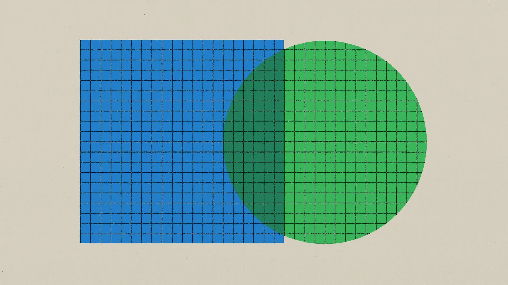
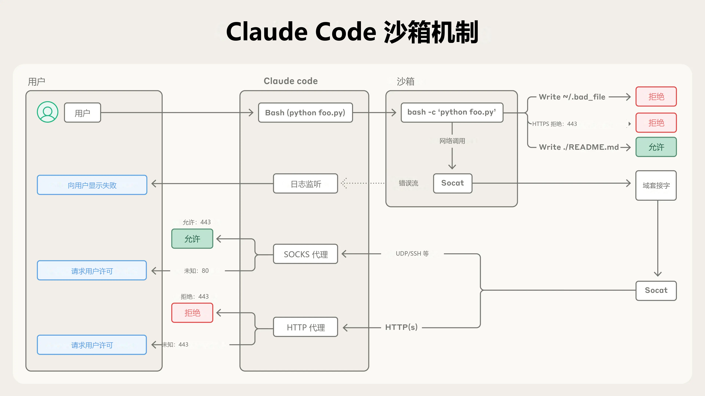
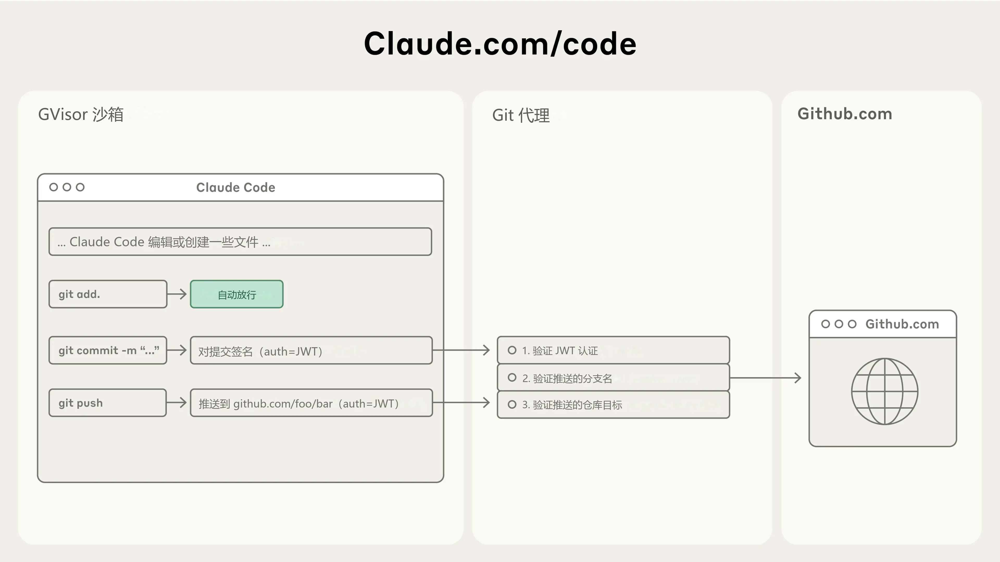
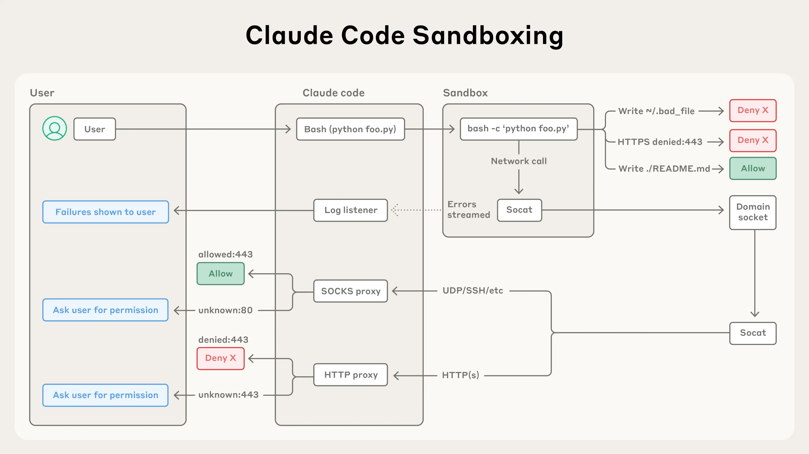
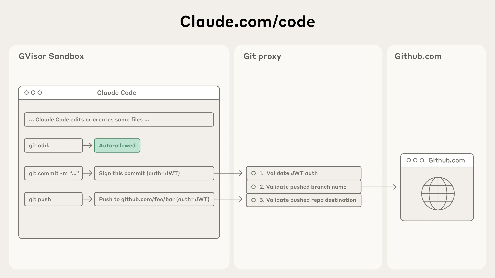

工程（Engineering） 2025 年 10 月 20 日

已发布 2025 年 10 月 20 日 团队 工程 主题相关文章 * 工程 2026 年 5 月 25 日 我们如何在各产品中约束 Claude
阅读更多 在 Claude Code 中，Claude 与你一同编写、测试和调试代码：浏览你的代码库、编辑多个文件、运行命令来验证自己的工作。让 Claude 拥有对代码库和文件如此大的访问权限，也可能带来风险，尤其是在发生提示词注入（prompt injection）时。 为解决这一问题，我们在 Claude Code 中引入了两项基于沙箱（sandboxing）的新功能，二者都旨在为开发者提供更安全的工作环境，同时让 Claude 能更自主地运行、减少权限提示。在我们的内部使用中，我们发现沙箱能在保证安全的前提下把权限提示减少 84%。通过划定 Claude 可自由工作的既定边界，它们同时提升了安全性与自主性。
Claude Code 采用基于权限的模型：默认状态下它是只读的，也就是说，在做出修改或运行任何命令之前，它都会先请求许可。这一规则有一些例外：我们会自动放行 echo 或 cat 这类安全命令，但大多数操作仍需显式批准。 不断点击「批准」会拖慢开发节奏，还可能导致「审批疲劳」——用户可能不再仔细留意自己批准了什么，反而让开发变得更不安全。 为此，我们为 Claude Code 推出了沙箱机制。
沙箱会预先划定边界，让 Claude 在其中更自由地工作，而不必为每个操作逐一请求许可。启用沙箱后，权限提示会大幅减少，安全性也会提高。 我们的沙箱方案建立在操作系统级别的功能之上，用以实现两道边界： 1. 文件系统隔离（filesystem isolation），它确保 Claude 只能访问或修改特定目录。这一点对于防止被提示词注入的 Claude 修改敏感系统文件尤为重要。 2. 网络隔离（network isolation），它确保 Claude 只能连接到经过批准的服务器。这可以防止被提示词注入的 Claude 泄露敏感信息或下载恶意软件。
值得注意的是，有效的沙箱_必须同时_具备文件系统隔离与网络隔离。没有网络隔离，被攻陷的智能体可能把 SSH 密钥之类的敏感文件外传；没有文件系统隔离，被攻陷的智能体则能轻易逃出沙箱并获得网络访问。正是通过同时使用这两种技术，我们才能为 Claude Code 用户提供更安全、更快捷的智能体体验。
我们正在推出一套新的沙箱运行时，它以研究预览的形式提供 beta 版本，让你可以精确定义智能体能够访问哪些目录和网络主机，而无需承担启动和管理容器的开销。它可以用来对任意进程、智能体和 MCP 服务器进行沙箱隔离。它同样以开源研究预览的形式提供。 在 Claude Code 中，我们用这套运行时为 bash 工具加上沙箱，使 Claude 能在你设定的边界内运行命令。在安全的沙箱内部，Claude 可以更自主地运行，并在无需权限提示的情况下安全地执行命令。如果 Claude 试图访问沙箱_之外_的内容，你会立即收到通知，并可以自行决定是否允许。 我们把这套机制构建在操作系统级别的原语之上，例如 Linux bubblewrap 和 MacOS seatbelt，以便在操作系统层面强制执行这些限制。它们不仅覆盖 Claude Code 的直接交互，也覆盖由该命令派生出的任何脚本、程序或子进程。如上所述，这个沙箱同时强制执行以下两点： 1. 文件系统隔离，通过允许读写当前工作目录、但阻止修改目录之外的任何文件来实现。 2. 网络隔离，通过只允许借助连接到沙箱外代理服务器的 unix 域套接字访问互联网来实现。该代理服务器会强制执行对进程可连接域名的限制，并处理对新请求域名的用户确认。若你希望进一步提升安全性，我们也支持自定义该代理，对出站流量强制执行任意规则。
这两个组件都可配置：你可以轻松地选择允许或禁止特定的文件路径或域名。

Claude Code 的沙箱架构通过文件系统与网络控制来隔离代码执行，自动放行安全操作、拦截恶意操作，并仅在必要时请求许可。 沙箱确保即便提示词注入成功，也会被完全隔离，无法影响用户的整体安全。这样一来，被攻陷的 Claude Code 既无法窃取你的 SSH 密钥，也无法向攻击者的服务器回连。 要开始使用这项功能，在 Claude Code 中运行 /sandbox，并查看关于我们安全模型的更多技术细节。 为了让其他团队更容易构建更安全的智能体，我们已经将这项功能开源。我们认为，其他团队也应当考虑把这项技术用于自己的智能体，以提升其智能体的安全态势。今天，我们还发布了网页版 Claude Code，让用户能够在云端隔离的沙箱中运行 Claude Code。网页版 Claude Code 会把每个 Claude Code 会话放在隔离沙箱中执行，使其以安全可靠的方式完整访问自己的服务器。我们在设计这个沙箱时，确保敏感凭据（例如 git 凭据或签名密钥）绝不会与 Claude Code 一同留在沙箱内部。这样一来，即便沙箱中运行的代码被攻陷，用户也不会受到进一步损害。 网页版 Claude Code 使用一个自定义代理服务，以透明方式处理所有 git 交互。在沙箱内部，git 客户端借助一个定制的、限定作用域的凭据向该服务完成认证。代理会核验这一凭据以及 git 交互的内容（例如确保它只向配置好的分支推送），随后在把请求发往 GitHub 之前附上正确的认证令牌。

Claude Code 的 Git 集成会把命令路由经过一个安全代理，由它校验认证令牌、分支名称和仓库目标地址——在支持安全版本控制工作流的同时，阻止未经授权的推送。对于把 Claude 用于工程工作的开发者而言，我们新的沙箱化 bash 工具与网页版 Claude Code 在安全性和生产力两方面都带来了显著提升。
要开始使用这些工具：
1. 在 Claude 中运行 /sandbox，并查看我们的文档了解如何配置这个沙箱。
2. 前往 claude.com/code 试用网页版 Claude Code。
或者，如果你正在构建自己的智能体，可以看看我们开源的沙箱代码，并考虑把它集成到你的工作中。我们期待看到你构建出的成果。 要进一步了解网页版 Claude Code，请查看我们的发布博客文章。
Article written by David Dworken and Oliver Weller-Davies, with contributions from Meaghan Choi, Catherine Wu, Molly Vorwerck, Alex Isken, Kier Bradwell, and Kevin Garcia
Article written by David Dworken and Oliver Weller-Davies, with contributions from Meaghan Choi, Catherine Wu, Molly Vorwerck, Alex Isken, Kier Bradwell, and Kevin Garcia
Published Oct 20, 2025 Team Engineering Topics
Related articles * Engineering May 25, 2026 How we contain Claude across products
View more In Claude Code, Claude writes, tests, and debugs code alongside you, navigating your codebase, editing multiple files, and running commands to verify its work. Giving Claude this much access to your codebase and files can introduce risks, especially in the case of prompt injection. To help address this, we’ve introduced two new features in Claude Code built on top of sandboxing, both of which are designed to provide a more secure place for developers to work, while also allowing Claude to run more autonomously and with fewer permission prompts. In our internal usage, we've found that sandboxing safely reduces permission prompts by 84%. By defining set boundaries within which Claude can work freely, they increase security and agency.
Claude Code runs on a permission-based model: by default, it's read-only, which means it asks for permission before making modifications or running any commands. There are some exceptions to this: we auto-allow safe commands like echo or cat, but most operations still need explicit approval. Constantly clicking "approve" slows down development cycles and can lead to ‘approval fatigue’, where users might not pay close attention to what they're approving, and in turn making development less safe. To address this, we launched sandboxing for Claude Code.
Sandboxing creates pre-defined boundaries within which Claude can work more freely, instead of asking for permission for each action. With sandboxing enabled, you get drastically fewer permission prompts and increased safety. Our approach to sandboxing is built on top of operating system-level features to enable two boundaries: 1. Filesystem isolation ,* which ensures that Claude can only access or modify specific directories. This is particularly important in preventing a prompt-injected Claude from modifying sensitive system files. 2. *Network isolation ,**** which ensures that Claude can only connect to approved servers. This prevents a prompt-injected Claude from leaking sensitive information or downloading malware.
It is worth noting that effective sandboxing requires both filesystem and network isolation. Without network isolation, a compromised agent could exfiltrate sensitive files like SSH keys; without filesystem isolation, a compromised agent could easily escape the sandbox and gain network access. It’s by using both techniques that we can provide a safer and faster agentic experience for Claude Code users.
We're introducing a new sandbox runtime, available in beta as a research preview, that lets you define exactly which directories and network hosts your agent can access, without the overhead of spinning up and managing a container. This can be used to sandbox arbitrary processes, agents and MCP servers. It is also available as an open source research preview. In Claude Code, we use this runtime to sandbox the bash tool, which allows Claude to run commands within the defined limits you set. Inside the safe sandbox, Claude can run more autonomously and safely execute commands without permission prompts. If Claude tries to access something outside of the sandbox, you'll be notified immediately, and can choose whether or not to allow it. We’ve built this on top of OS level primitives such as Linux bubblewrap and MacOS seatbelt to enforce these restrictions at the OS level. They cover not just Claude Code's direct interactions, but also any scripts, programs, or subprocesses that are spawned by the command.As described above, this sandbox enforces both: 1. Filesystem isolation, by allowing read and write access to the current working directory, but blocking the modification of any files outside of it. 2. Network isolation, by only allowing internet access through a unix domain socket connected to a proxy server running outside the sandbox. This proxy server enforces restrictions on the domains that a process can connect to, and handles user confirmation for newly requested domains. And if you’d like further-increased security, we also support customizing this proxy to enforce arbitrary rules on outgoing traffic.
Both components are configurable: you can easily choose to allow or disallow specific file paths or domains.

Claude Code's sandboxing architecture isolates code execution with filesystem and network controls, automatically allowing safe operations, blocking malicious ones, and asking permission only when needed. Sandboxing ensures that even a successful prompt injection is fully isolated, and cannot impact overall user security. This way, a compromised Claude Code can't steal your SSH keys, or phone home to an attacker's server. To get started with this feature, run /sandbox in Claude Code and check out more technical details about our security model. To make it easier for other teams to build safer agents, we have open sourced this feature. We believe that others should consider adopting this technology for their own agents in order to enhance the security posture of their agents.Today, we're also releasing Claude Code on the web enabling users to run Claude Code in an isolated sandbox in the cloud. Claude Code on the web executes each Claude Code session in an isolated sandbox where it has full access to its server in a safe and secure way. We've designed this sandbox to ensure that sensitive credentials (such as git credentials or signing keys) are never inside the sandbox with Claude Code. This way, even if the code running in the sandbox is compromised, the user is kept safe from further harm. Claude Code on the web uses a custom proxy service that transparently handles all git interactions. Inside the sandbox, the git client authenticates to this service with a custom-built scoped credential. The proxy verifies this credential and the contents of the git interaction (e.g. ensuring it is only pushing to the configured branch), then attaches the right authentication token before sending the request to GitHub.

Claude Code's Git integration routes commands through a secure proxy that validates authentication tokens, branch names, and repository destinations—allowing safe version control workflows while preventing unauthorized pushes.Our new sandboxed bash tool and Claude Code on the web offer substantial improvements in both security and productivity for developers using Claude for their engineering work.
To get started with these tools:
1. Run /sandbox in Claude and check out our docs on how to configure this sandbox.
2. Go to claude.com/code to try out Claude Code on the web.
Or, if you're building your own agents, check out our open-sourced sandboxing code, and consider integrating it into your work. We look forward to seeing what you build. To learn more about Claude Code on the web, check out our launch blog post.
Article written by David Dworken and Oliver Weller-Davies, with contributions from Meaghan Choi, Catherine Wu, Molly Vorwerck, Alex Isken, Kier Bradwell, and Kevin Garcia
Article written by David Dworken and Oliver Weller-Davies, with contributions from Meaghan Choi, Catherine Wu, Molly Vorwerck, Alex Isken, Kier Bradwell, and Kevin Garcia